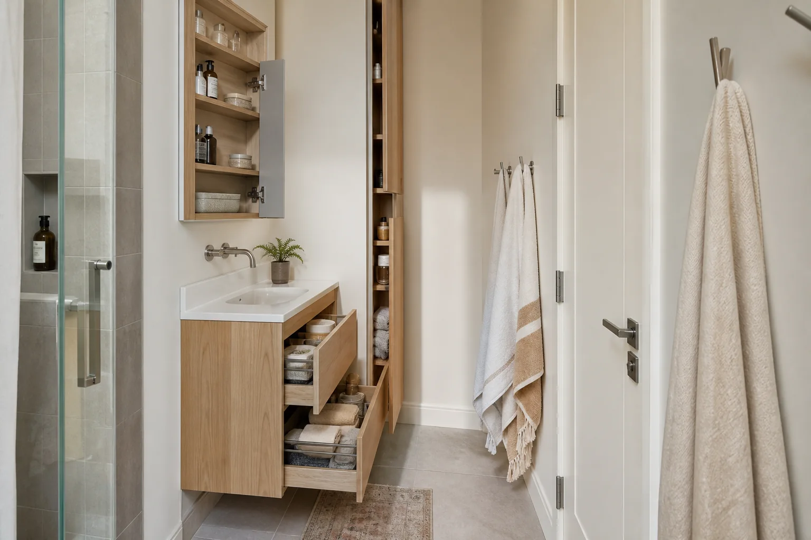

Focused priority 01
Small Bathroom Planning
Compact rooms benefit from precise measurements, careful door movement, right-sized fixtures, useful storage, brighter finishes, and a layout that protects every usable inch.
- Space and clearance review
- Compact fixtures and storage
- Lighting and ventilation coordination